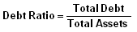

A financial ratio that measures the extent of a company's or consumer's leverage. The debt ratio is defined as the ratio of total debt to total assets, expressed in percentage, and can be interpreted as the proportion of a company's assets that are financed by debt.
The higher this ratio, the more leveraged the company and the greater its financial risk. Debt ratios vary widely across industries, with capital-intensive businesses such as utilities and pipelines having much higher debt ratios than other industries like technology. In the consumer lending and mortgage businesses, debt ratio is defined as the ratio of total debt service obligations to gross annual income.
A company with total assets of $100 million and total debt of $30 million has a debt ratio of 30%. Is this company in a better financial situation than one with a debt ratio of 40%? It depends on the industry in which the companies operate. A debt ratio of 30% may be too high for a company that operates in a sector where cash flows are volatile and its peers have little debt, since this debt level may reduce its financial flexibility and competitive advantage. Conversely, a debt level of 40% may be easily manageable for a company in a sector such as utilities, where cash flows are stable and higher debt ratios are the norm.
A debt ratio of greater than 1 indicates that a company has more debt than assets. Meanwhile, a debt ratio of less than 1 indicates that a company has more assets than debt. Used in conjunction with other measures of financial health, the debt ratio can help investors determine a company's risk level.
In the consumer lending and mortgages business, two common debt ratios used to assess a borrower's ability to repay a loan or mortgage are the gross debt service ratio and the total debt service ratio. The gross debt ratio is defined as the ratio of monthly housing costs (including mortgage payments, home insurance and property costs) to monthly income, while the total debt service ratio is the ratio of monthly housing costs plus other debt such as car payments and credit card borrowings to monthly income. Acceptable levels of the total debt service ratio, in percentage terms, range from the mid-30s to the low-40s.
{kind=link}